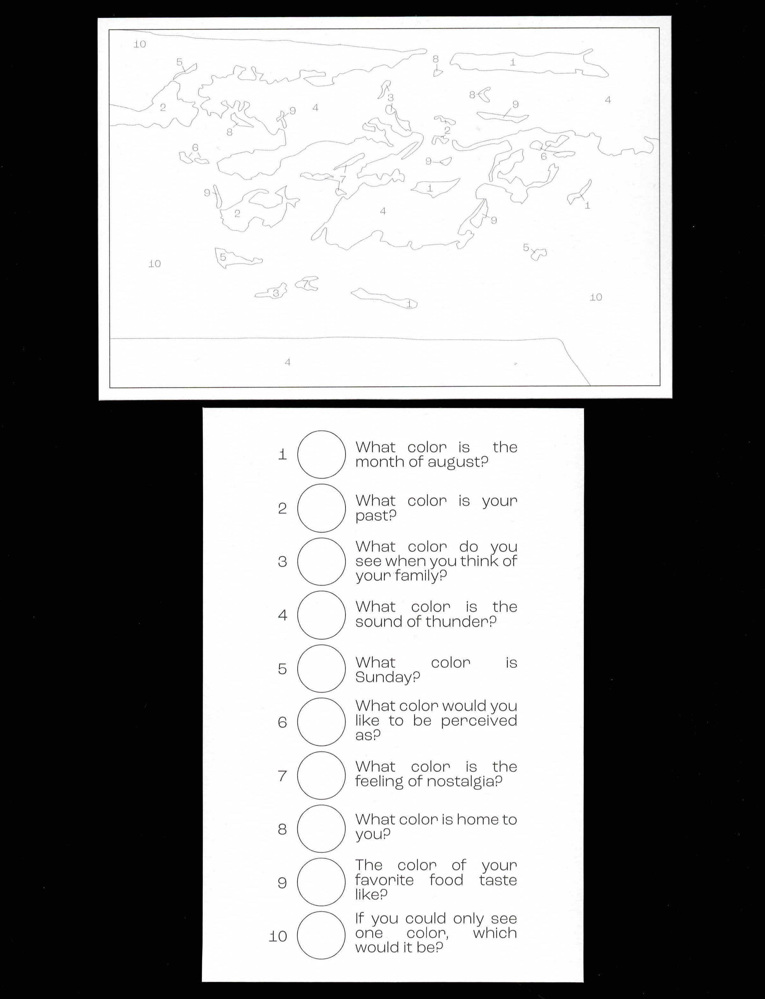
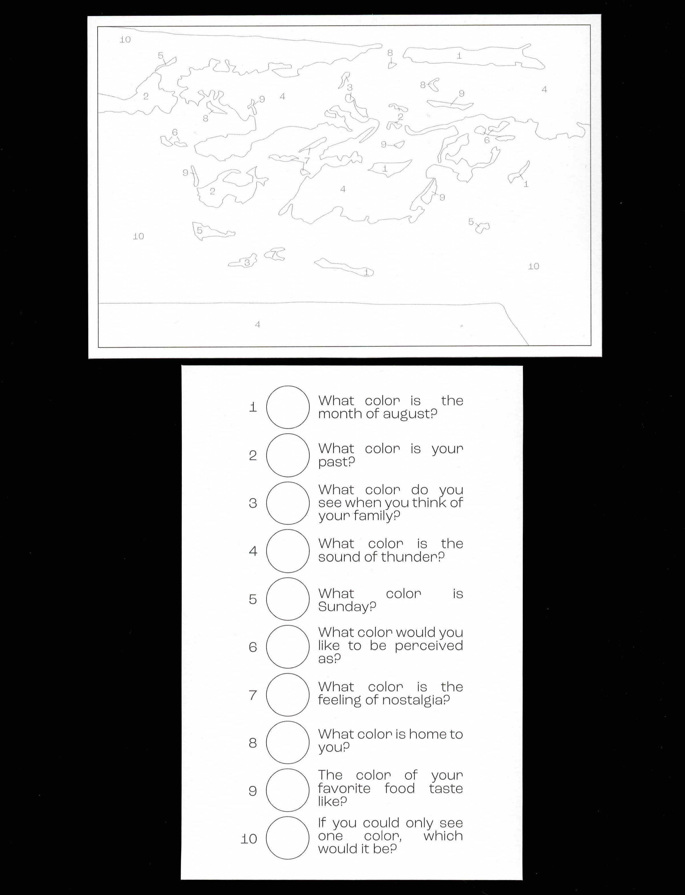

A game-like activity of coloring that removes the prescriptiveness of most coloring activities currently on the market. No color palette or materials were given. Instead, users are prompted to use their own materials and perceptions of color to create their own color palette.
By Number uses subjective questions to prompt participants to generate a color pallette. In doing so, each color pallette is unique to each individual, and therefore each finished color by number is completely unique.
 
